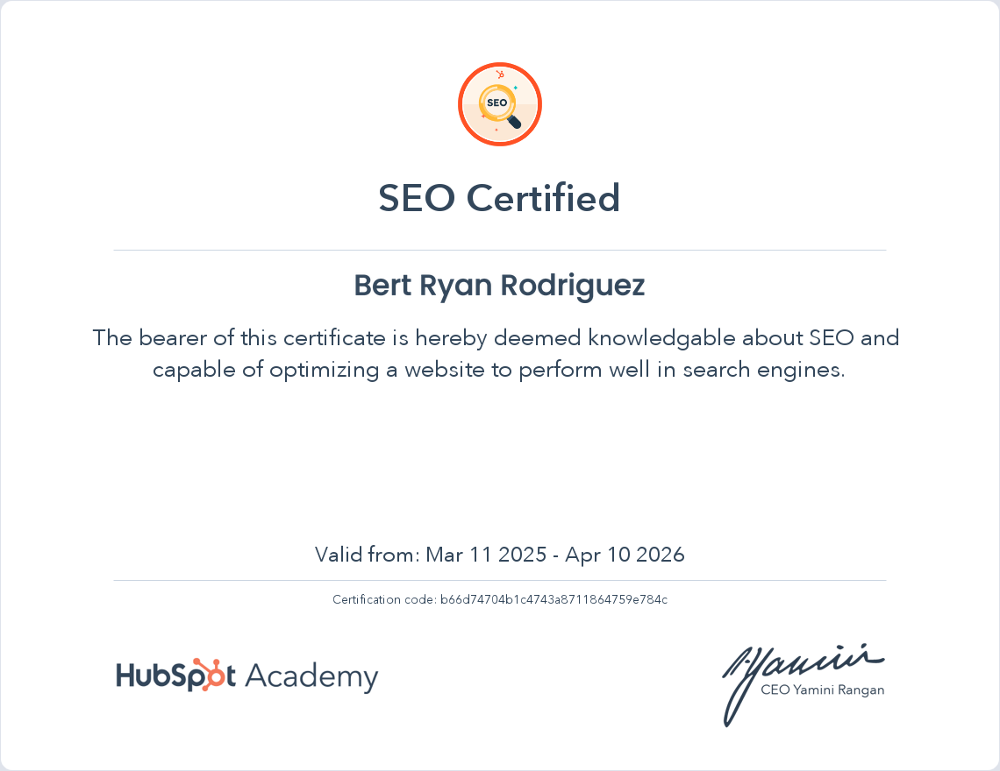
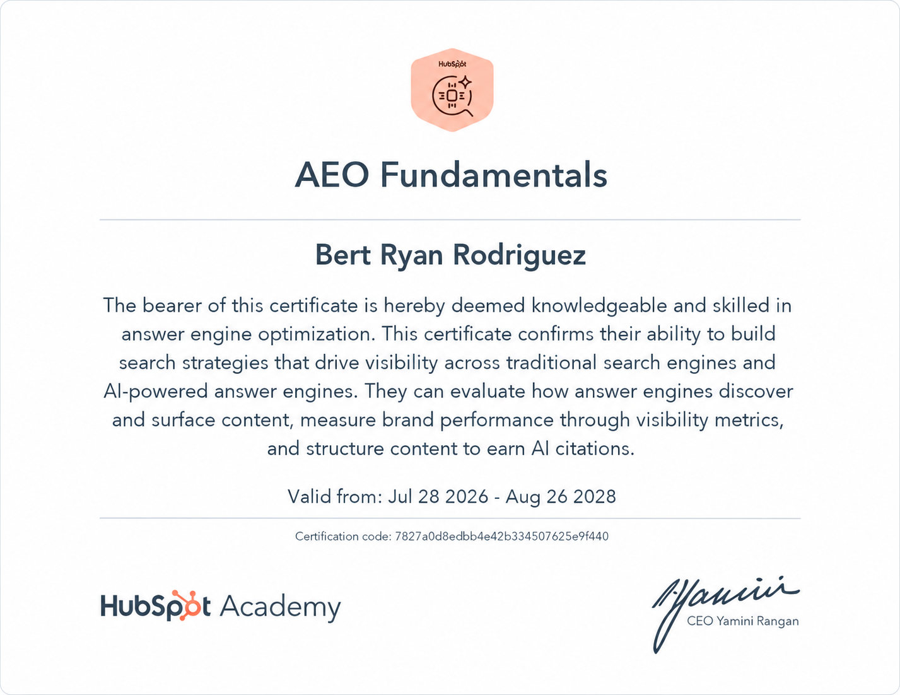
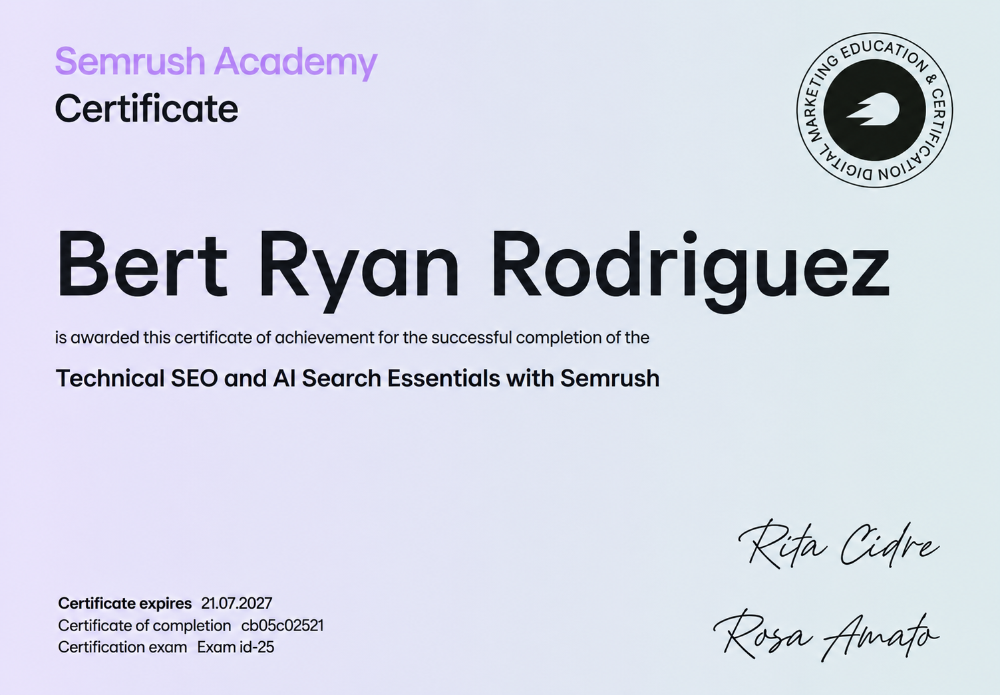

My name is Bert, I'm an SEO Specialist from the Philippines. I've spent my 5+ years helping businesses improve their online visibility and connect with the right audience through search. My experience covers Technical SEO, On-Page SEO, Off-Page SEO, Local SEO, and Generative Engine Optimization (GEO), allowing me to approach SEO from both a technical and strategic perspective.
In this portfolio, you’ll find case studies showcasing my work and results, professional certifications, and blogs where I share my knowledge, insights, and experiences in SEO. I enjoy analyzing data, solving SEO challenges, and continuously learning new ways to improve how businesses are discovered online. For me, SEO isn’t just about rankings it’s about creating meaningful visibility that can contribute to real business growth.
Click here to view my resume⧉
Hi there! my name is Bert, I'm an SEO Specialist from the Philippines. I've spent my 5+ years helping businesses improve their online visibility and connect with the right audience through search. My experience covers Technical SEO, On-Page SEO, Off-Page SEO, Local SEO, and Generative Engine Optimization (GEO), allowing me to approach SEO from both a technical and strategic perspective.
Continuous learning keeps my SEO knowledge current and results-driven.



Continuous learning keeps my SEO knowledge current and results-driven.
Real client projects showcasing improved rankings, increased traffic, and business growth.
If you're looking to increase your Google rankings, attract more qualified leads, and achieve sustainable organic growth, I'd love to help. Let's discuss your business and create an SEO strategy tailored to your goals.
Let's Work TogetherStraight answers about what an SEO specialist actually does, how long results take, and what it costs to get found.
No questions match that search. Try a different term.